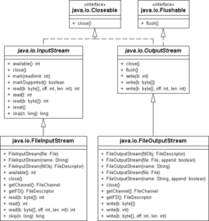

15.4 Stream-Klassen und Reader/Writer am Beispiel von Dateien
Unterschiedliche Klassen zum Lesen und Schreiben von Binär- und Zeichendaten sammeln sich im Paket java.io. Für die byte-orientierte Verarbeitung, etwa von PDF- oder MP3-Dateien, gibt es andere Klassen als für Textdokumente, zum Beispiel HTML oder Konfigurationsdateien. Binär- von Zeichendaten zu trennen ist sinnvoll, da zum Beispiel beim Einlesen von Textdateien diese immer in Unicode konvertiert werden müssen, da Java intern alle Zeichen in Unicode kodiert.
Die vier Basisklassen sind
- die zeichenorientierten Klassen Reader, Writer und
- die byte-orientierten Klassen InputStream und OutputStream.
FileInputStream, FileReader, FileOutputStream, FileWriter
Dieser Abschnitt stellt die vier Klassen zum Lesen und Schreiben aus Dateien vor, und zwar jeweils die zeichen- und byte-orientierten Klassen.
| Bytes (oder Byte-Arrays) | Zeichen (oder Zeichen-Arrays, Strings) | |
| Aus Dateien lesen | FileInputStream | FileReader |
| In Dateien schreiben | FileOutputStream | FileWriter |
| Hinweis |
|
Lies den ganzen Dateiinhalt in ein Byte-Feld: File f = new File( dateiname ); |
15.4.1 Mit dem FileWriter Texte in Dateien schreiben
Der FileWriter ist ein spezieller Writer, der Ausgaben in eine Datei erlaubt.
Das folgende Programm erstellt die Datei fileWriter.txt und schreibt eine Textzeile mit Zeilenvorschubzeichen hinein:
Listing 15.3: com/tutego/insel/io/stream/FileWriterDemo.java, main()
Writer fw = null;
try
{
fw = new FileWriter( "fileWriter.txt" );
fw.write( "Zwei Jäger treffen sich..." );
fw.append( System.getProperty("line.separator") ); // e.g. "\n"
}
catch ( IOException e ) {
System.err.println( "Konnte Datei nicht erstellen" );
}
finally {
if ( fw != null )
try { fw.close(); } catch ( IOException e ) { e.printStackTrace(); }
}
Da der Konstruktor und die write()/append()-Methoden eine IOException in dem Fall auslösen, wenn ein Öffnen beziehungsweise Schreiben nicht möglich ist, müssen wir einen try-Block um die Anweisungen setzen oder mit throws den Fehler nach oben weitergeben.
class java.io.FileWriter |
- FileWriter(File file) throws IOException
- FileWriter(String filename) throws IOException
- FileWriter(File file, boolean append) throws IOException
- FileWriter(String filename, boolean append) throws IOException
Erzeugt einen Ausgabestrom und hängt die Daten an eine existierende Datei an, wenn append gleich true ist. Eine weitere Möglichkeit, Daten hinten anzuhängen, bietet die Klasse RandomAccessFile oder FileOutputStream. - FileWriter(FileDescriptor fd)
Erzeugt einen Ausgabestrom zum Schreiben in eine Datei. Existiert die Datei bereits, deren Namen wir übergeben, wird die Datei gelöscht.
Auf den ersten Blick scheinen der Klasse FileWriter die versprochenen write()-Methoden zu fehlen. Fakt ist aber, dass diese von OutputStreamWriter geerbt werden, und die Klasse erbt und überschreibt wiederum die Methoden aus Writer. Mit den Oberklassen verfügt der FileWriter insgesamt über folgende Methoden, deren Ausnahme IOException hier nicht genannt ist:
- Writer append(char c)
- Writer append(CharSequence csq)
- Writer append(CharSequence csq, int start, int end)
- void write(int c)
- void write(String str)
- void write(String str, int off, int len)
- void write(char[] cbuf)
- void write(char[] cbuf, int off, int len)
- void close()
- void flush()
- String getEncoding()
Bis auf getEncoding() lösen alle verbleibenden Methoden im Fehlerfall eine IOException aus, die als geprüfte Ausnahme behandelt werden muss. Die Methoden stellt Abschnitt 15.5.7, »Die abstrakte Basisklasse Writer«, genauer vor.
15.4.2 Zeichen mit der Klasse FileReader lesen
Der FileReader liest aus Dateien entweder einzelne Zeichen, Strings oder Zeichenfelder. Wie beim Writer deklariert die Klasse Konstruktoren zur Annahme des Dateinamens. So zeigt folgendes Beispiel eine Anwendung der FileReader-Klasse:
Listing 15.4: com/tutego/insel/io/stream/FileReaderDemo.java, main()
Reader reader = null;
try
{
reader = new FileReader( "bin/lyrics.txt" );
for ( int c; ( c = reader.read() ) != –1; )
System.out.print( (char) c );
}
catch ( IOException e ) {
System.err.println( "Fehler beim Lesen der Datei!" );
}
finally {
try { reader.close(); } catch ( Exception e ) { e.printStackTrace(); }
}
class java.io.FileReader |
- public FileReader(String fileName) throws FileNotFoundException
Öffnet die Datei über einen Dateinamen zum Lesen. Falls sie nicht vorhanden ist, löst der Konstruktor eine FileNotFoundException aus. - public FileReader(File file) throws FileNotFoundException
Öffnet die Datei zum Lesen über ein File-Objekt. Falls sie nicht verfügbar ist, löst der Konstruktor eine FileNotFoundException aus. - public FileReader(FileDescriptor fd)
Nutzt die schon vorhandene offene Datei über ein FileDescriptor-Objekt.
Die Methoden zum Lesen stammen aus den Oberklassen InputStreamReader und Reader. Aus InputStreamReader kommen int read(), int read(char[], int, int), close(), getEncoding() und ready(). Da InputStreamReader wiederum Reader erweitert, kommen die Methoden int read(char[]), int read(CharBuffer), mark(int), markSupported(), reset(), skip(long) hinzu. Abschnitt 15.5.8, »Die abstrakte Basisklasse Reader«, beschreibt die Methoden genauer.
15.4.3 Kopieren mit FileOutputStream und FileInputStream
Die Klasse FileOutputStream bietet grundlegende Methoden, um in Dateien zu schreiben. FileOutputStream implementiert alle nötigen Methoden, die java.io.OutputStream vorschreibt, also etwa write(int), write(byte[]).
class java.io.FileOutputStream |
- FileOutputStream(String name) throws FileNotFoundException
Erzeugt einen FileOutputStream mit einem gegebenen Dateinamen. - FileOutputStream(File file) throws FileNotFoundException
Erzeugt einen FileOutputStream aus einem File-Objekt. - FileOutputStream(String name, boolean append) throws FileNotFoundException
Wie FileOutputStream(name), hängt jedoch bei append=true Daten an. - FileOutputStream(File file, boolean append) throws FileNotFoundException
Wie FileOutputStream(file), hängt jedoch bei append=true Daten an. - FileOutputStream(FileDescriptor fdObj)
Erzeugt einen FileOutputStream aus einem FileDescriptor-Objekt.
Ist der Parameter append nicht mit true belegt, wird der alte Inhalt überschrieben. Die FileNotFoundException wirkt vielleicht etwas komisch, wird aber dann ausgelöst, wenn zum Beispiel die Dateiangabe ein Verzeichnis repräsentiert oder die Datei gelockt ist.
FileInputStream ist der Gegenspieler und dient zum Lesen der Binärdaten. Um ein Objekt anzulegen, haben wir die Auswahl zwischen drei Konstruktoren. Sie binden eine Datei (etwa repräsentiert als ein Objekt vom Typ File) an einen Datenstrom.
class java.io.FileInputStream |
- FileInputStream(String name) throws FileNotFoundException
Erzeugt einen FileInputStream mit einem gegebenen Dateinamen. - FileInputStream(File file) throws FileNotFoundException
Erzeugt FileInputStream aus einem File-Objekt. - FileInputStream(FileDescriptor fdObj)
Erzeugt FileInputStream aus einem FileDescriptor-Objekt.
Der FileInputStream ist ein spezieller InputStream und besitzt daher Methoden wie int read(), int read(byte[]) zum Lesen.
Zur Veranschaulichung dient die folgende Grafik.
Abbildung 15.5: UML-Diagramm der Klassen FileInputStream und FileOutputStream
15.4.4 Datenströme über Files mit NIO.2 beziehen
Anstatt einen FileInputStream oder einen FileOutputStream mit einem Dateinamen oder File-Objekt anzulegen, bietet die Files-Klasse zwei Methoden, die direkt den Eingabe-/Ausgabestrom liefern:
final abstract java.nio.file.Files |
- static OutputStream newOutputStream(Path path, OpenOption... options)
Legt eine Datei an und liefert den Ausgabestrom auf die Datei. - static InputStream newInputStream(Path path, OpenOption... options)
Öffnet die Datei und liefert einen Eingabestrom zum Lesen.
Da die OpenOption ein Vararg ist und somit weggelassen werden können, ist der Programmcode kurz. (Er wäre noch kürzer ohne die korrekte Fehlerbehandlung...)
Beispiel: Eine kleine PPM-Grafikdatei schreiben
Das PPM-Format ist ein einfaches Grafikformat. Es beginnt mit einem Identifizierer, dann folgenden die Ausmaße und schließlich die ARGB-Werte für die Pixelfarben.
Listing 15.5: com/tutego/insel/nio2/WriteTinyPPM.java, main()
try ( OutputStream out = Files.newOutputStream( Paths.get( "littlepic.ppm" ) ) )
{
out.write( "P3 1 1 255 255 0 0".getBytes() );
}
catch ( IOException e )
{
e.printStackTrace();
}
Falls die Datei nicht existiert, wird sie überschrieben; existiert sie nicht, wird sie neu angelegt. Diese Standardoption ist aber ein wenig zu einschränkend, und daher beschreibt OpenOption Zusatzoptionen. OpenOption ist eine Schnittstelle, die von den Aufzählungen LinkOption, StandardOpenOption realisiert wird.
| OpenOption | Beschreibung |
| java.nio.file.StandardOpenOption | |
| READ | Öffnen für Lesezugriff |
| WRITE | Öffnen für Schreibzugriff |
| APPEND | Neue Daten kommen an das Ende. Atomar bei parallelen Schreiboperationen. |
| TRUNCATE_EXISTING | Für Schreiber: Existiert die Datei, wird die Länge vorher auf 0 gesetzt. |
| CREATE | Legt Datei an, falls sie noch nicht existiert. |
| CREATE_NEW | Legt Datei nur an, falls sie vorher noch nicht existierte. |
| DELETE_ON_CLOSE | Die Java-Bibliothek versucht, die Datei zu löschen, wenn sie geschlossen wird. |
| SPARSE | Hinweis für das Dateisystem, die Datei kompakt zu speichern, da sie aus vielen Null-Bytes besteht |
| SYNC | Jeder Schreibzugriff und jedes Update der Metadaten soll sofort zum Dateisystem. |
| DSYNC | Jeder Schreibzugriff soll sofort zum Dateisystem. |
| java.nio.file.LinkOption | |
| NOFOLLOW_LINKS | Symbolischen Links wird nicht gefolgt. |
Die Option CREATE_NEW kann nur funktionieren, wenn die Datei noch nicht vorhanden ist. Das zeigt anschaulich das folgende Beispiel:
Listing 15.6: com/tutego/insel/nio2/StandardOpenOptionCreateNewDemo.java, main()
Files.deleteIfExists( Paths.get( "opa.herbert.tmp" ) );
Files.newOutputStream( Paths.get( "opa.herbert.tmp" ) ).close();
Files.newOutputStream( Paths.get( "opa.herbert.tmp" ) ).close();
Files.newOutputStream( Paths.get( "opa.herbert.tmp" ),
StandardOpenOption.CREATE_NEW ).close();
Hier führt die letzte Zeile zu einer »java.nio.file.FileAlreadyExistsException: opa.herbert .tmp«.
Die Option DELETE_ON_CLOSE ist für temporäre Dateien nützlich. Das folgende Beispiel verdeutlicht die Arbeitsweise:
Listing 15.7: com/tutego/insel/nio2/StandardOpenOptionDeleteOnCloseDemo.java, main()
Path path = Paths.get( "opa.herbert.tmp" );
Files.deleteIfExists( path );
System.out.println( Files.exists( path ) ); // false
Files.newOutputStream( path ).close();
System.out.println( Files.exists( path ) ); // true
Files.newOutputStream( path, StandardOpenOption.DELETE_ON_CLOSE,
StandardOpenOption.SYNC ).close();
System.out.println( Files.exists( path ) ); // false
Im letzten Fall wird die Datei angelegt, ein Datenstrom geholt und gleich wieder geschlossen. Wegen StandardOpenOption.DELETE_ON_CLOSE wird Java die Datei von sich aus löschen, was Files.exists() belegt.
Ihr Kommentar
Wie hat Ihnen das <openbook> gefallen? Wir freuen uns immer über Ihre freundlichen und kritischen Rückmeldungen.
 Jetzt bestellen
Jetzt bestellen


{kind=link}